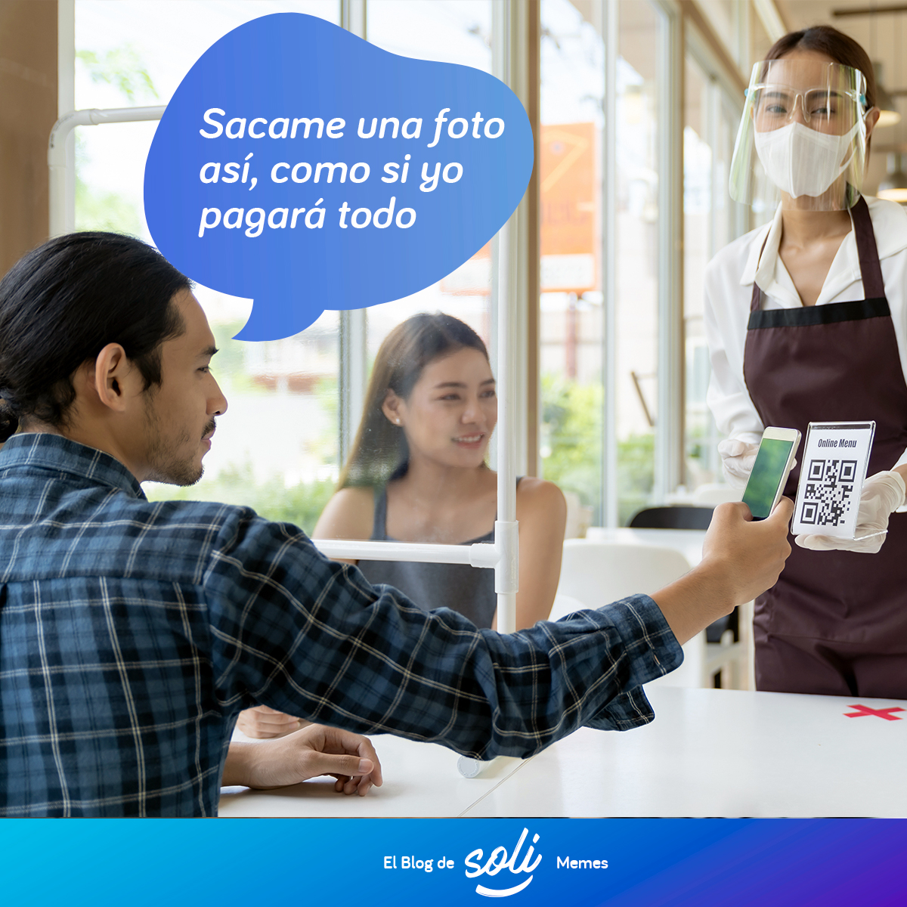
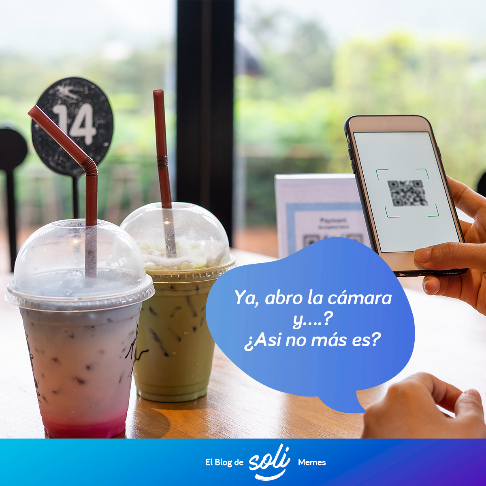
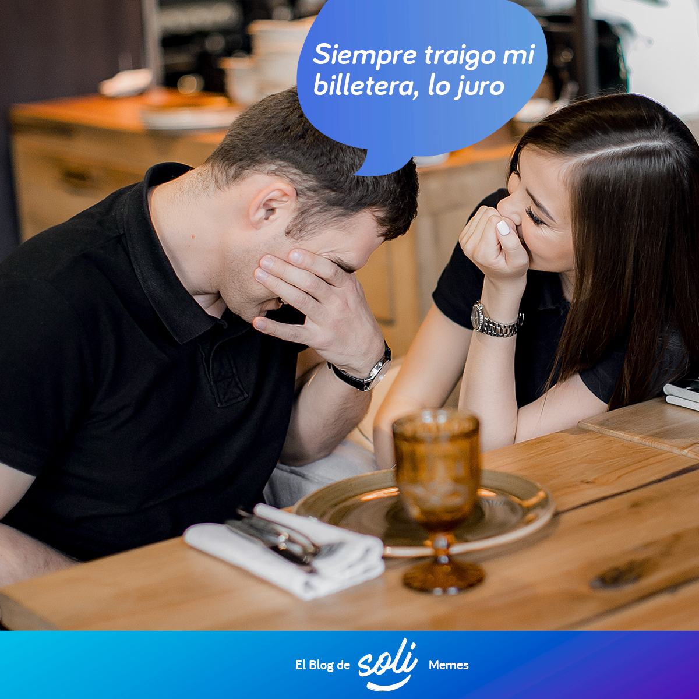

Los códigos QR, ¿Cómo facilitan la vida en Bolivia?
En Bolivia los pagos QR han logrado incluir más personas a la inclusión financiera. La tecnología ha se ha popularizado con las transacciones de dinero electrónico en compras rutinarias, desde pagos lujosos hasta mercados populares.

¿Te topaste con uno de estos? ¿Código QR?

¿Cu Ere? ¿Perdón? ¿Lo primero que pensaste? ¿Para que servirá?
¿Por qué de pronto están en todas las cajas de cobro o mesas en restaurantes? En todos los anuncios nos incorporan el famoso código, y uno no sabe qué hacer.
Pues te explicamos, estás presenciando la última tecnología global patentada para que sea la nueva forma que un código pueda almacenar información y cualquier dispositivo smartphone pueda leerlo.
Pero ¿qué es un código QR?
Las siglas significan “Respuesta Rápida” (Quick Response). Es la mejora del código de barras electrónico que puede almacenar información más compleja y desplegarla de manera veloz.
La información puede ser, por ejemplo, los datos de un negocio, y como tal, funciona como método ágil de transferencia electrónica entre cuentas digitales de cuentas bancarias o billeteras móviles bolivianas.
En este año se ha ido posicionando como el sistema de pago favorito de respuesta rápida, pues facilita las transacciones entre comercios, tiendas virtuales, personas y bancos en Bolivia.
¿Cómo un código pago QR puede recibir dinero?
Lo cierto es que todo se trata de una comunicación eficiente entre las cuentas bancarias.
Vamos a entenderlo con la metáfora de un teatro: en escena y detrás de escenas.
• En escenas:
El QR tiene la información bancaria del negocio (por ejemplo: Número de cuenta de ahorro) por lo que, al escanearlo en tu aplicación móvil de tu banca móvil o billetera electrónica.
• Detrás de escenas:
El dinero en la cuenta de ahorros o billetera móvil es transferido a la otra cuenta de ahorros con un procedimiento que se gestionan entre instituciones financieras.
Bolivia y los Pagos QR
En Bolivia, desde su implementación por ASOBAN a mediados de 2019, esta alternativa tiene cada vez más popularidad en bancos, comercios, tiendas virtuales, y emprendedores que se suman al QR como forma de pago sin necesidad de usar dinero en efectivo.
Ahora es tan popular que pueden tener otras formas y colores, suelen aparecer en carteles publicitarios, letreros, anuncios de televisión, como medio informativo en las mesas de los restaurantes para acceder al menú, o cómo sistema de pago para acceder a promociones o cupones de descuento de algún sitio web o tienda virtual.
Los códigos QR tienen muchas funcionalidades que atraen y benefician, pero definitivamente, queremos destacar que son una solución de pago electrónico rápido y seguro, además, su uso es muy simple: mediante un celular inteligente tipo smartphone o tablet y una aplicación que descargues en el dispositivo (actualmente en la mayoria de dispositivos móviles ya viene incluida está función en la cámara) solo debes realizar sobre él un escaneo con la cámara del celular y listo! se procesa la información y tus pagos se generan automaticamente.
¿Pero qué beneficios trae utilizar esta tecnología como forma de pago digital?
- Las opciones de productos y servicios que se pueden pagar usando un código QR son muchas, desde los huevos en la tienda de barrio, compras en sitios web o tiendas virtuales en redes sociales como Facebook, hasta la cena en un restaurante, o incluso pagar el recorrido en un taxi.
- Si eres un emprendedor, dueño de negocio o manejas una tienda virtual, te permite cobrar por tus ventas con total seguridad, te permite crear cupones de descuento, brindar más información sobre un producto y además estas dándole más opciones de pago a tus clientes. Si quieres conocer como los códigos QR ayudan a tu negocio da click aqui
- Es sencillo y fácil de usar, ya que no requieres dar tu número de cuenta para cobrar o registrar los datos de una cuenta antes de pagar.
- Es completamente seguro, la tecnología usada en los códigos QR cumplen con normas internacionales de seguridad y aseguran su autenticidad y confiabilidad, además, interactúan entre sí con cualquier cuenta digital alojada en Billeteras Móviles asi como con todo el sistema financiero.
- Te saca de apuros ya que puedes hacer compras más rápidas y sin utilizar efectivo
Tienes muchas posibilidades, ¿Por qué no intentarlo? La billetera móvil Soli es una de las mejores alternativas, que te permite usar esta funcionalidad de código QR (sin iniciar sesión) con seguridad, administrar tu dinero sin necesidad de una cuenta bancaria o llevar dinero en efectivo, ¡y lo mejor! sin cargos adicionales o comisión. Solo debes descargar la app, registrarte, y empezar a usar. Descargala aquí
Código QR, descubre esta solución tecnológica que facilitara tu vida
Si eres de los que en ocasiones siente que su vida está dominada por ese tic tac que marca los pasos del día, no importa si tienes 25, 35, 45 años, eres soltero, casado, trabajas como empleado o eres un emprendedor con tu propio negocio, solo despiertas en la mañana y no tienes minutos que perder, necesitas cumplir con una lista de tareas que quieres realizar rápidamente y sin demoras, seguro te vas a interesar por lo que vamos a contar.
¿Se te hizo tarde y no tienes dinero en efectivo para comprar lo del desayuno?
Vas en el micro, te llama tu esposa:
no olvides traer la carne para la cena. –Ouchh, la carne!
Estas saliendo del trabajo y recibes una llamada: papá, papá! necesito pinturas para mi tarea, me traes?, ahh y mamá dice que no olvides…
--Noo!, sin tiempo y sin efectivo
Estas con tu pareja en el café, es solo tu segunda cita y olvidaste tu billetera. –Wow, que embrollo

Estas y otras situaciones inesperadas donde cuentas con poco tiempo y requieres de dinero en efectivo, estas apurado como para tener que desplazarte a un cajero a realizar un retiro, o peor aún, estas lejos de casa y olvidaste tu billetera, hacen parte del día a día de los Bolivianos.
Tranquilo! estos lios son tema del pasado, ahora puedes llegar a comprar todo lo que necesitas con solo tomarle una foto a un código QR y tus compras se pagaran sin utilizar dinero en efectivo ¿Cómo? Por ejemplo si cuentas con tu telefono celular y tienes una cuenta digital en una billetera móvil. Cónoce más de Soli Pagos bcp aquí.